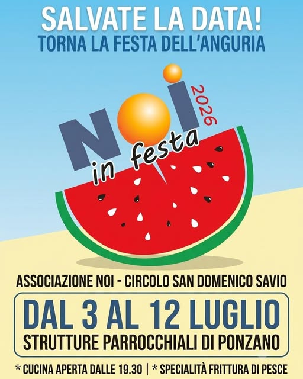
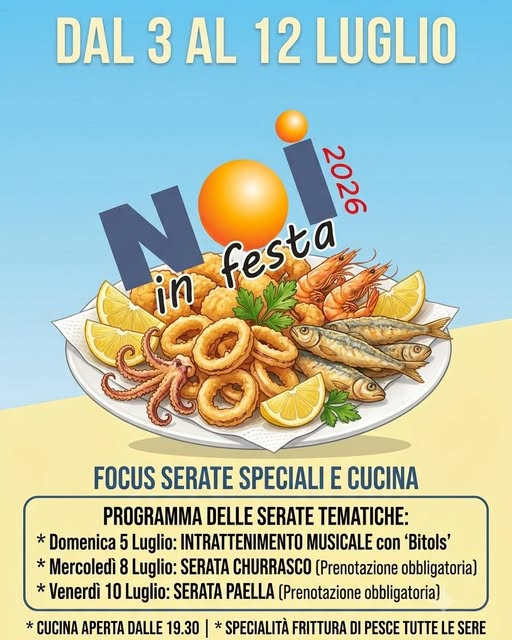
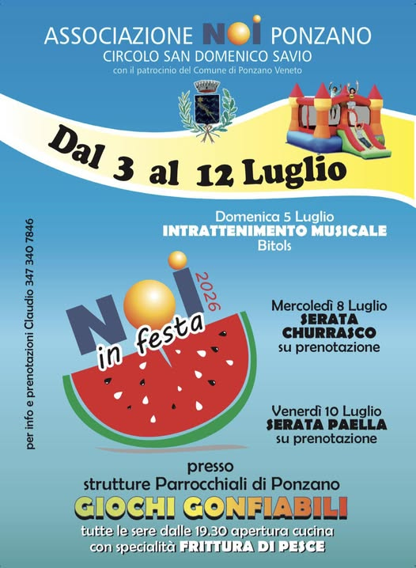

La vita dell'oratorio
I Nostri Eventi
Festa dell'Anguria
Da oltre dieci anni, ogni estate l'oratorio di Ponzano si riempie per la storica Festa dell'Anguria. Un appuntamento aperto a tutto il paese: musica, giochi, stand gastronomici e tantissima anguria fresca, offerta da tutta la comunità.
L'evento è reso possibile dai tantissimi ragazzi e volontari che ogni anno scelgono di mettersi in gioco como camerieri, animatori e organizzatori: un'iniziativa aperta a tutti, dove chiunque può dare una mano facendo il cameriere — un'occasione di festa, ma anche di crescita e di comunità.
Tra gli stand gastronomici non manca una specialità della casa a base di pollo, oltre naturalmente a fiumi di anguria fresca. E per i più piccoli, sul campo da calcio, oltre ai tavoli per mangiare insieme trovano spazio anche dei gonfiabili per giocare in tutta sicurezza.



📌 Seguici sulla nostra pagina Facebook per non perderti i prossimi eventi!